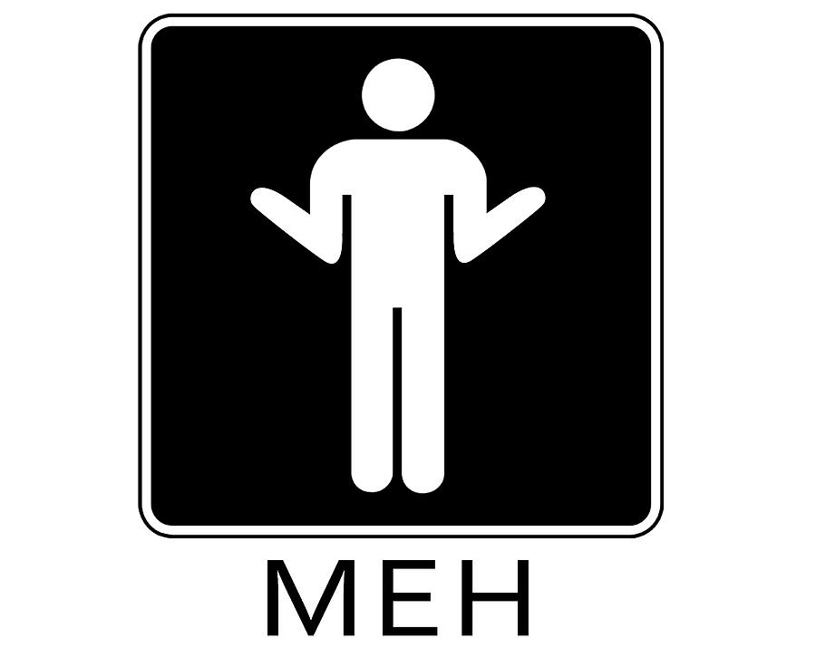
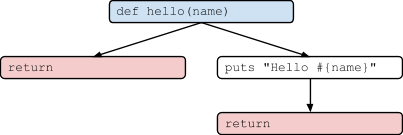
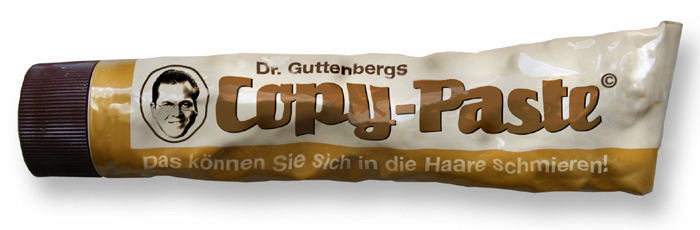
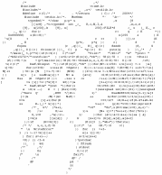
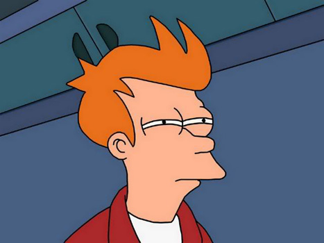

Code Quality, meh?!
Christophe Philemotte, Belighted, 9 May 2013
About me
Developer (@toch on GitHub, @_toch on Twitter)
Author on blog.8thcolor.com
CoFounder of PullReview https://pullreview.com

I hope to see Ruby help every programmer in the world to be productive, and to
enjoy programming, and to be happy. That is the primary purpose of Ruby
language. Matz, 2008
Code is like farts. It stinks if it isn’t yours.





For Developer
productivity / time
confidence
For Company
money
confidence
2 Aspects
Functional
Structural
Functional
How it complies to the:
user stories
specs
functionalities
requirements
Structural
Reliability
Efficiency
Security
Maintainability
Size
How to check them?

Tests
_
_
Tests
Code Review
_
Tests
Code Review
Static Analysis
What can we measure with Static Analysis?
Reliability
(Efficiency)
Security
Maintainability
Size
How can we measure?
Complexity
Duplication
Code Style
Test infection
Suspicious constructs / Flaws
Code Smells
Best Practices
Security
Complexity
How complex it is to understand and modify your code.
It’s correlated to the number of bugs.
def hello_world
puts "Hello world"
end
def hello(name)
if name
puts "Hello #{name}"
end
end

def hello(name)
return unless name
puts "Hello #{name}"
end

Duplication

It’s correlated to the number of bugs.
Code Style

Test infection
To find untested code
Suspicious constructs / Flaws
Code Smells
Best Practices
